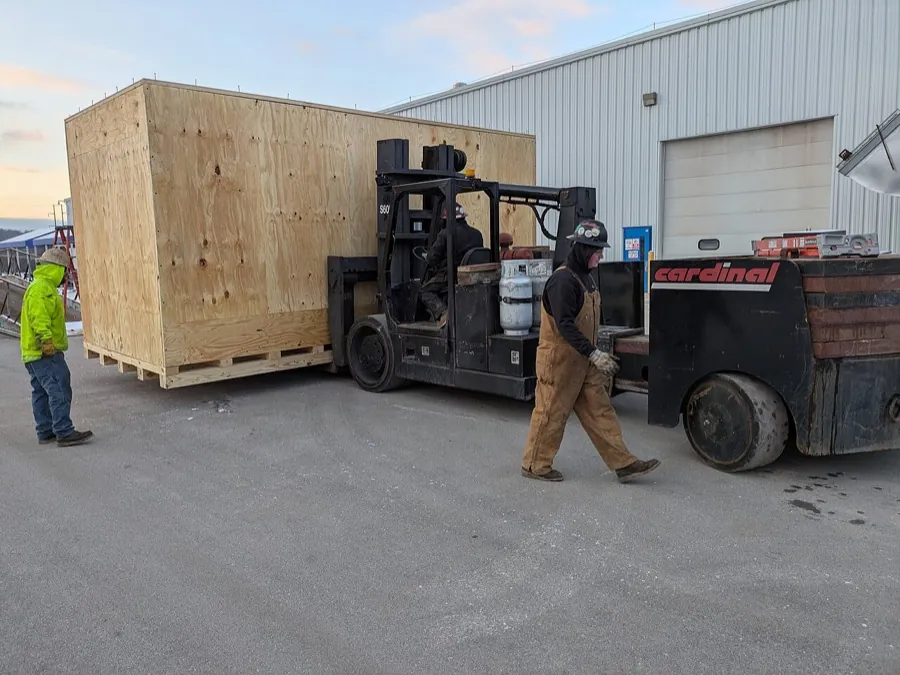

Emballage bois export traité ISPM 15
Vous expédiez à l'étranger ? Les palettes et emballages bois destinés à l'export doivent souvent répondre à la norme ISPM 15. Bois Tunisie vous guide pour retenir le bon format, le bon calage et le bon traitement selon votre destination.
La norme ISPM 15, en clair
ISPM 15 est une norme internationale qui encadre le traitement des emballages bois (palettes, caisses, calages) utilisés dans les échanges internationaux, afin de limiter la propagation d'organismes nuisibles d'un pays à l'autre. Le traitement le plus répandu est le traitement thermique, dit HT : le bois est chauffé jusqu'à atteindre au moins 56 °C à cœur pendant au minimum 30 minutes, sans recours à des produits chimiques.
Une fois traité, l'emballage reçoit un marquage officiel qui atteste du traitement effectué. De nombreux pays importateurs exigent ce marquage pour accepter l'entrée de marchandises calées sur du bois. Le non-respect peut entraîner un blocage, une fumigation ou un refus à la frontière.
Notre accompagnement
Chez Bois Tunisie, nous vous aidons à déterminer le format, le calage et le type de traitement les mieux adaptés à votre marché de destination, pour des palettes neuves comme pour des emballages bois sur-mesure. Décrivez-nous votre produit, son poids et le pays d'arrivée : nous vous orientons vers une solution conforme à vos besoins d'export.

Questions fréquentes
À quoi sert la norme ISPM 15 ?
ISPM 15 encadre le traitement des emballages bois (palettes, caisses, calages) utilisés dans le commerce international, pour limiter la propagation d'organismes nuisibles. Les emballages conformes sont traités puis marqués afin d'attester le traitement. De nombreux pays importateurs l'exigent pour le bois d'emballage.
S'agit-il d'un traitement chimique ou thermique ?
Le procédé le plus courant est le traitement thermique (HT) : le bois est chauffé jusqu'à atteindre au moins 56 °C à cœur pendant au minimum 30 minutes, sans aucun produit chimique. C'est la voie habituelle pour répondre à la norme ISPM 15.
Assurez-vous le marquage ISPM 15 ?
Bois Tunisie accompagne ses clients pour préparer un emballage bois adapté à l'export et au traitement ISPM 15. Le statut d'autorisation et les modalités de marquage sont à confirmer avec notre équipe : contactez-nous pour les solutions disponibles selon votre destination.